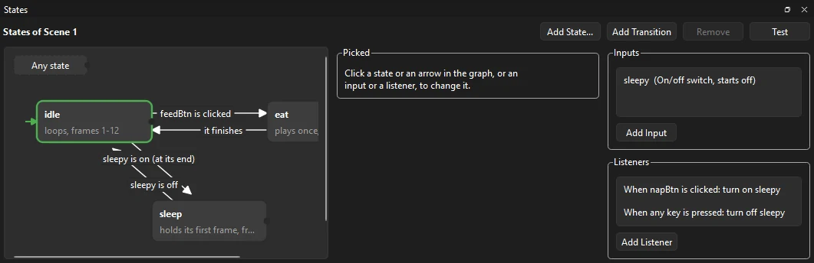
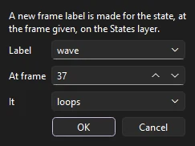
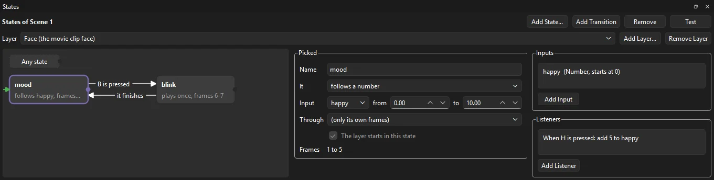
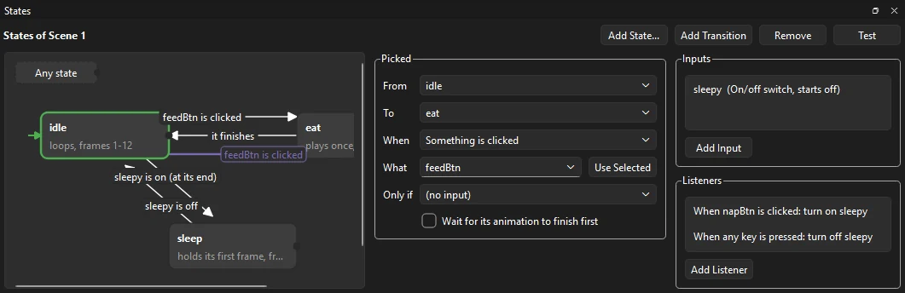

Animation
Interactive states
A character that waves when you click it, a menu that opens when the pointer comes over it, a pet that eats when you feed it: the States panel makes a movie clip, or the whole movie, answer clicks and keys without writing any code. Each pose or bit of animation is a state, and arrows between the states say what sends the playhead from one to another.

Before you start
States are made of two things you already know from the timeline:
- Frame labels. Put each pose or piece of animation on frames of its own and give the first of them a label in the Properties panel: idle on frames 1 to 12, eat on 13 to 24, sleep from 25. A state plays from its label to the frame before the next label (or the end of the timeline).
- Instance names. Something to click needs a name: select the button or movie clip on the stage and type a name such as feedBtn in the Properties panel. It has to be on the same timeline as the labels.
The states can belong to the main timeline (the scene) or to a movie clip symbol: open the symbol by double-clicking it, and the panel shows that symbol's states, so every copy of it on the stage behaves the same way.
Open the States panel
Choose . The panel opens beside the Timeline and shows the states of the timeline you are editing. The graph is on the left, what you have picked in the middle, and the inputs and listeners on the right.
States
Click Add State.... The Label list offers the frame labels that are not states yet; pick one. Or type a new name and give the frame where it starts: Phoenix makes the label for you, on a layer called States.

Each state does one of four things with its frames:
| It | What happens |
|---|---|
| loops | Plays its frames over and over, like a walk cycle or an idle bob. |
| plays once | Plays its frames and stops on the last one: a jump, a wave, a door opening. |
| holds its first frame | Stays still on its first frame: a button that is pressed, a light that is off. |
| follows a number | Shows the frame a number input picks, and keeps up as the number changes: a gauge, a dial, a health bar, a face from sad to happy. Input chooses the number and the values at the state's first and last frame; between them, its frames are spread evenly. |
Click a state's box to change it. Name is its frame label: renaming the state renames the label. Through lets a state play on through the frames of later labels too. The movie starts in this state marks the starting state, shown with a green arrow; the first state you add starts out as that. Drag a box to move it about the graph.
Layers of states
A movie clip on the timeline can have states of its own that play at the same time as the timeline's: a character walks while its face changes expression, a button glows while its icon spins. Give the movie clip an instance name, then click Add Layer..., name the layer and choose the movie clip. The Layer list above the graph switches between the timeline's own states and each layer's.

A layer's states are the movie clip's frame labels, so label the clip's frames first; Add State... offers them. Its transitions join its own states, and the Any state box sends it to one of them whatever it is doing. Every layer goes by the same inputs and listeners, so one key or click can move several at once. Remove Layer takes out the layer and its states; the clip's labels stay.
Transitions
A transition is an arrow from one state to another. To make one, drag from the small dot on the right edge of a state's box and let go on another box. (Or pick a state and click Add Transition.) Click an arrow, or the words on it, to say when it happens:

| When | The transition happens |
|---|---|
| Something is clicked | When the instance named in What is clicked: pressed and let go over it. |
| Something is pressed | As soon as the mouse button goes down on it. |
| The mouse button is let go over something | When the button comes up over it, wherever it went down. |
| The pointer moves onto something, or off it | When the pointer comes over the instance, or leaves it: for hover effects. |
| A key is pressed | When the Key picked is pressed: a letter, a number, Space, Enter, an arrow key, or any key. |
| Its animation finishes | When the state reaches its last frame (for a loop, each time round). |
| Some time goes by | After the number of seconds given in the state. |
| Only when an input is set | As soon as the input in Only if has the value given (see Inputs). |
For a click, What lists the named buttons and movie clips on the timeline; you can also select one on the stage and click Use Selected. Only if adds a condition to any transition: feedBtn is clicked, if hungry is on. Wait for its animation to finish first lets the state play to its end before going, so a bob or a step is never cut off halfway.
The Any state box at the top is for a transition that leaves whatever state is playing: drag from its dot to a state, for example to send a character to hurt whatever it is doing when it is hit.
Inputs
An input is a named value the transitions can go by. Click Add Input, then name it in the middle column. There are three kinds:
- An On/off switch, such as sleepy or door open, that starts on or off. Test it with is on or is off.
- A Number, such as score or lives, that starts at a value. Test it with >, <, =, is not, is at least or is at most a number: score > 3.
- A Trigger, which fires once: the transition that goes because of it uses it up, so it does not send the state on again.
Listeners
A listener sets an input when something is clicked or a key is pressed, whatever state is playing. Click Add Listener and choose When (a click, press, release, hover or key), What or Key, the Input, and Then: turn on, turn off or flip a switch, add to a number or set it, or fire a trigger. The list reads like a sentence: When napBtn is clicked: turn on sleepy.
Listeners and transitions together make small games: a listener adds 1 to score each time a coin is clicked, and a transition goes to win when score is at least 10.
Try it
Click Test at the top of the panel. The movie plays in Test Movie, where you can click and press keys and watch the states change.
Each change in the panel is one step that takes back. Remove takes out the state, arrow, input or listener picked; a state's frame label stays on the timeline.
What Phoenix writes
You never need to look, but the states are turned into ordinary ActionScript: Phoenix writes it on the first frame of the States layer, between two comment lines that start with // [States] and // [/States]. It is ActionScript 3 for an ActionScript 3 document, and ActionScript 1 and 2 otherwise, as the document's publish settings say. Because it is plain ActionScript, the states work in Test Movie, in a published SWF or HTML5 page, and in any other app that opens the file, with nothing of Phoenix's needed.
- Each change in the panel writes the lines between the markers again. Lines of your own on that frame, above or below them, are kept as they are; do not change the lines between the markers, as they are replaced.
- The states themselves are kept in the file in a setting other apps ignore, so Phoenix can show them in the panel again.
- If the labels move on the timeline, or the document's ActionScript version changes, the panel says the scripts are out of date: click Update Scripts. Test does so for you.
- In ActionScript 1 and 2, the instances clicked get
onRelease,onPress,onRollOveroronRollOuthandlers, which take the place of handlers of the same name a script of yours sets on the same instance. Theiron()handlers still run. - Timers count frames at the document's frame rate.
Learn it step by step
The lesson A pet that answers clicks () makes a little pet eat when Feed is clicked and sleep when Nap is clicked, with an input, two listeners and four transitions.